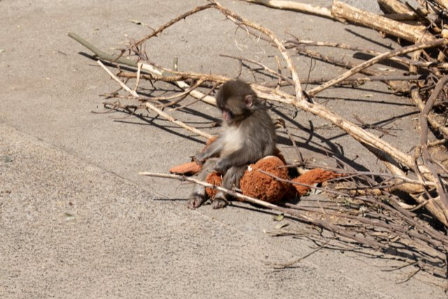
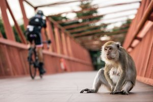

The story that broke millions of hearts now has the ending everyone was hoping for. Punch—the baby macaque at Ichikawa City Zoo who went viral for clinging to a stuffed orangutan after being rejected by his mother—has been reunited with his birth mother, Cleopatra.
Zoo staff confirmed that Cleopatra, who had abandoned Punch shortly after his birth in 2025, has begun accepting him back into her care. The reunion has been gradual and carefully managed by keepers, but the signs are unmistakable: Cleopatra has been seen grooming Punch, allowing him to cling to her back, and even sleeping beside him.
It's the happy ending nobody dared to expect—and the internet is losing it all over again.
The backstory: How Punch became the world's most famous monkey
For those just catching up: Punch is a baby Japanese macaque born at Ichikawa City Zoo, a small municipal zoo just east of Tokyo in Chiba Prefecture. Shortly after birth, his mother Cleopatra rejected him—refusing to nurse or carry him—and zookeepers were forced to step in and hand-raise the tiny monkey.
Without a mother, Punch struggled to fit in with the troop. Videos showed older macaques pushing him away, ignoring him, and leaving him alone. In response, keepers gave him a stuffed orangutan toy for comfort—and Punch latched onto it like a lifeline.
Clips of the little monkey hugging, grooming, and carrying his plush companion everywhere went massively viral, sparking global conversations about animal emotions and resilience. Punch became an internet sensation overnight.
Why did Cleopatra abandon Punch?

Cleopatra was a first-time mother when Punch was born during an intense summer heatwave. Zookeepers believe the combination of inexperience and heat stress caused her to reject her newborn—a behavior that, while heartbreaking, is not uncommon among captive primates.
The social dynamics within the troop also played a role. Competition and hierarchy among macaques can make it harder for inexperienced mothers to bond with their young, especially under stressful environmental conditions.
But Cleopatra never left the troop. She remained at the zoo, living among the same group of macaques—and as months passed, keepers began noticing something: she was watching Punch.
The reunion: How it happened

The reunion didn't happen overnight. Zoo staff began noticing Cleopatra showing increasing interest in Punch as he grew older and more independent. She would sit near him during feeding times, and on several occasions was spotted reaching out to touch him briefly before pulling away.
Keepers took a cautious approach, allowing the pair to interact naturally without forcing contact. Over the course of several weeks, Cleopatra's behavior shifted dramatically. She began grooming Punch—a key bonding behavior among macaques—and eventually allowed him to cling to her fur, something she had refused when he was a newborn.
The breakthrough moment came when Punch was observed sleeping curled up against Cleopatra, his stuffed orangutan toy still tucked under one arm. Staff described the scene as one of the most moving things they had ever witnessed at the zoo.
What the experts say
Animal behavior experts say that delayed maternal bonding, while rare, is not unheard of in primates. Stress, inexperience, and environmental factors can temporarily disrupt a mother's instincts, but the underlying bond can sometimes re-emerge once conditions improve.
In Punch's case, his growing confidence—partly thanks to the stuffed toy and the care of his keepers—may have made him less demanding and more approachable to Cleopatra. As he learned social cues from other macaques in the troop, he also became better at reading his mother's signals.
Experts caution that the relationship is still developing and may look different from a typical mother-infant bond, but the signs are overwhelmingly positive.
What about the stuffed orangutan?
Punch hasn't completely let go of his famous plush companion. While he now spends most of his time with Cleopatra and the troop, keepers say he still picks up the stuffed orangutan from time to time—especially during moments of stress or when the troop gets particularly active.
It's become a symbol of his journey: from rejected newborn clinging to a toy for comfort, to a confident young macaque reunited with the mother who left him behind.
Where to see Punch and Cleopatra

Punch and Cleopatra live at Ichikawa City Zoo, located in Ichikawa City in Chiba Prefecture, just across the Edo River from Tokyo. The zoo is a small community zoo known for its family-friendly atmosphere and for housing animals native to Japan, including Japanese macaques, red pandas, and various birds and small mammals.
From Tokyo, visitors can reach Ichikawa by local JR train lines in about 30–40 minutes. From the nearest station, buses or taxis provide access to the zoo.
A story that came full circle

Punch's story captivated the world because it touched something deeply human—the need for comfort, the pain of rejection, and the hope that things can get better. His reunion with Cleopatra is proof that sometimes, even in the animal kingdom, second chances happen.
Whether you followed Punch from the beginning or you're just hearing about him now, one thing is clear: the little monkey with the stuffed orangutan got his happy ending.

FAQs
Is Punch really back with his mother?
Yes. Ichikawa City Zoo staff have confirmed that Punch's birth mother, Cleopatra, has begun accepting him back. She has been observed grooming him, letting him cling to her, and sleeping beside him.
Who is Cleopatra?
Cleopatra is Punch's birth mother, a Japanese macaque at Ichikawa City Zoo. She rejected Punch shortly after his birth in 2025, likely due to heat stress and first-time motherhood, but has since reconnected with him.
Does Punch still carry his stuffed toy?
Sometimes. While Punch now spends most of his time with Cleopatra and the troop, he still picks up his famous stuffed orangutan during moments of stress or high activity.
How old is Punch?
Punch was born in 2025, making him about seven to eight months old. He is a Japanese macaque, also known as a snow monkey.
Can I visit Punch and Cleopatra?
Yes. Ichikawa City Zoo is open to visitors. The zoo is located in Chiba Prefecture, about 30–40 minutes from central Tokyo by JR train. Animal viewing depends on weather and the zoo's daily schedule.
Why did Cleopatra reject Punch in the first place?
Zookeepers believe it was a combination of factors: Cleopatra was a first-time mother, Punch was born during an extreme heatwave, and the social dynamics of the captive troop added additional stress.